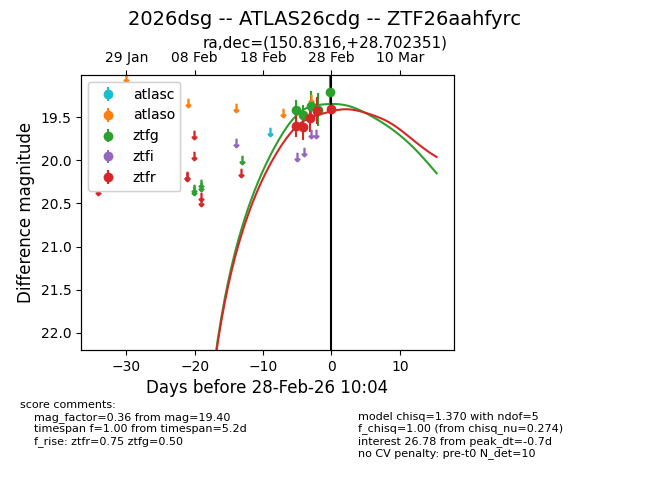
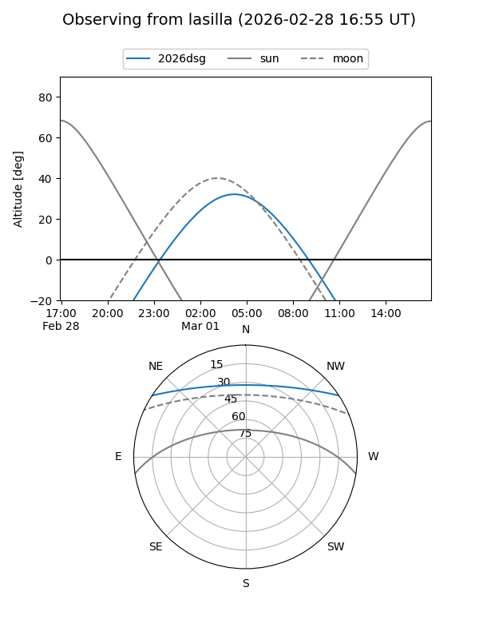
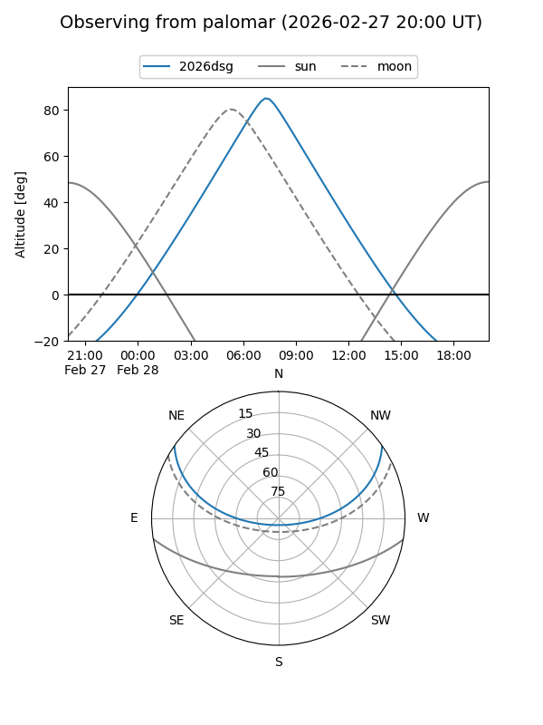
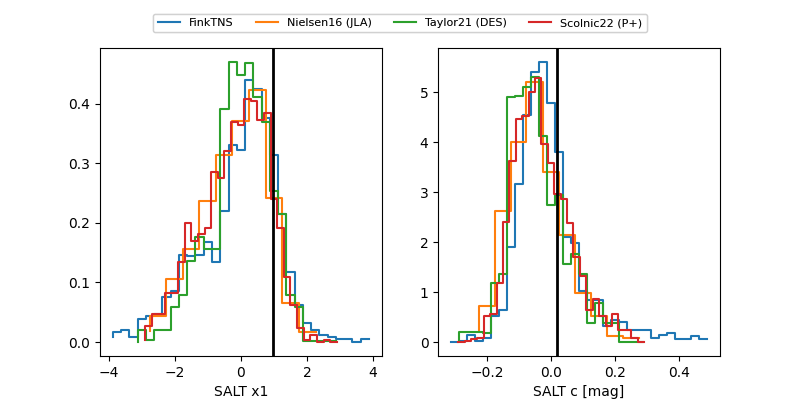

2026dsg
Target 2026dsg at 2026-02-28 10:06
Aliases and brokers:
FINK: link
Lasair: link
ALeRCE: link
TNS: link
YSE: link
alt names
ZTF26aahfyrc (ztf,fink_ztf)
2026dsg (tns,yse)
ATLAS26cdg (atlas)
Coordinates:
equatorial (ra, dec) = 150.8316,+28.70235
equatorial (HMS+DMS) = 10:03:19.57,+28:42:08.46
galactic (l, b) = (200.4184,+53.02125)
Flags:
Photometry:
last ztfg=19.21, ztfr=19.40
5 ztfg, 5 ztfr detections
Lightcurve

Visibility


Additional plots
